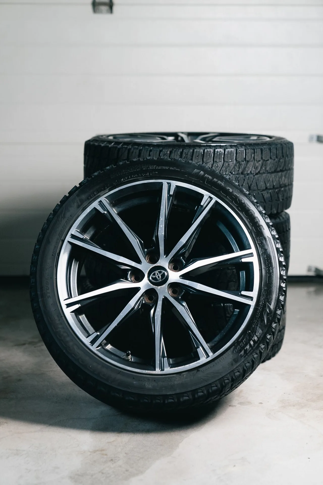
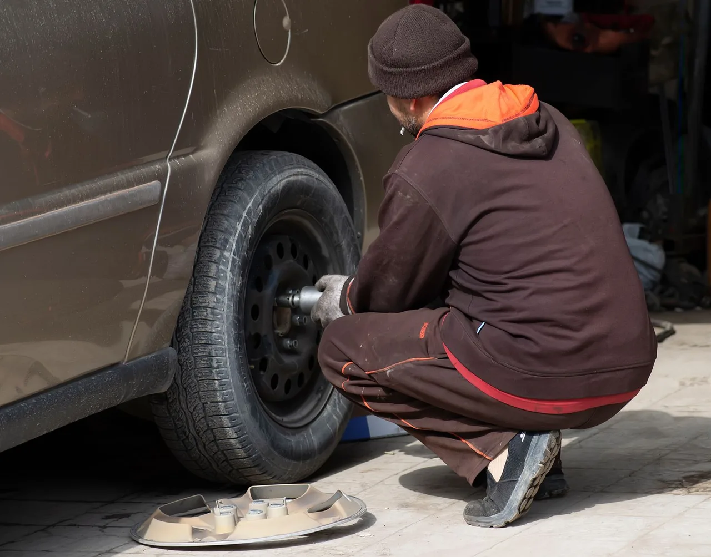

Шиномонтаж · Мурманск
Спецшин51: шиномонтаж на Марата
Посмотрите график и контакты шиномонтажа в Мурманске.
- Связь через ВКонтакте в карточке мастерской

Услуги
Стоимость выбранной работы уточняйте у мастерской.
- Шиномонтажуточнить
Как обратиться в мастерскую
- 01
Выберите услугу
Укажите, какую работу нужно выполнить.
- 02
Уточните время
В карточке мастерской доступны способы связи.
- 03
Постройте маршрут
Откройте адрес в Яндекс Картах перед поездкой.


Частые вопросы
Как уточнить стоимость и время?
Сообщите мастерской, какая услуга нужна. Для замены шин укажите тип автомобиля и размер колёс.
Где найти адрес и график?
Актуальные сведения и маршрут доступны в карточке на Яндекс Картах.
Отзывы на Яндекс Картах
Все отзывы«Быстрый и качественный шиномонтаж, приемлемые цены»
Отзыв на Яндекс Картах · 27 августа 2021«Лучший шиномонтаж в городе»
Отзыв на Яндекс Картах · 2 февраля 2021
Контакты и маршрут
- График
- пн-пт 09:30–19:00; сб 10:00–17:00
- Связь
- ВКонтакте · в карточке мастерской